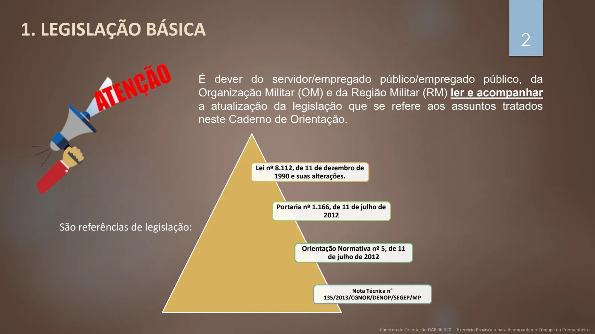
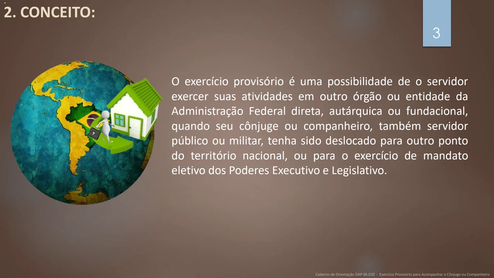
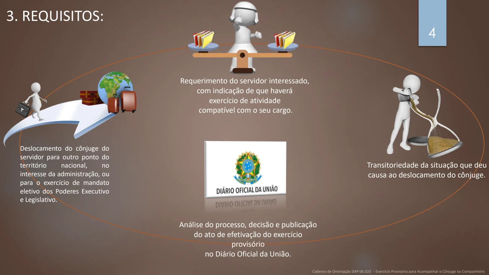
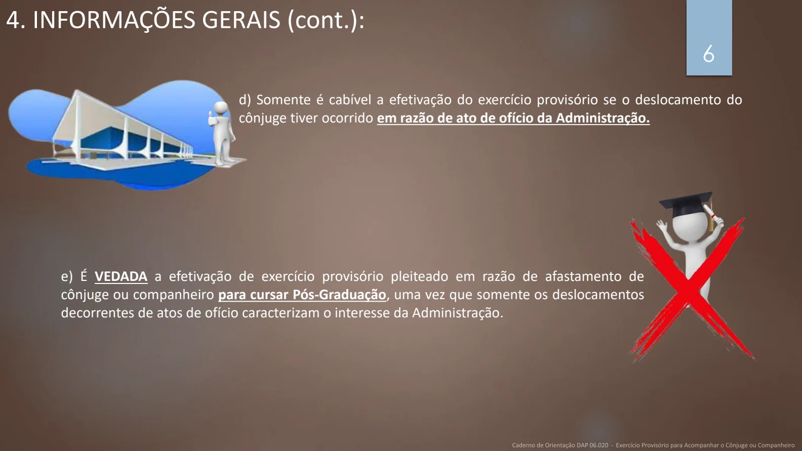
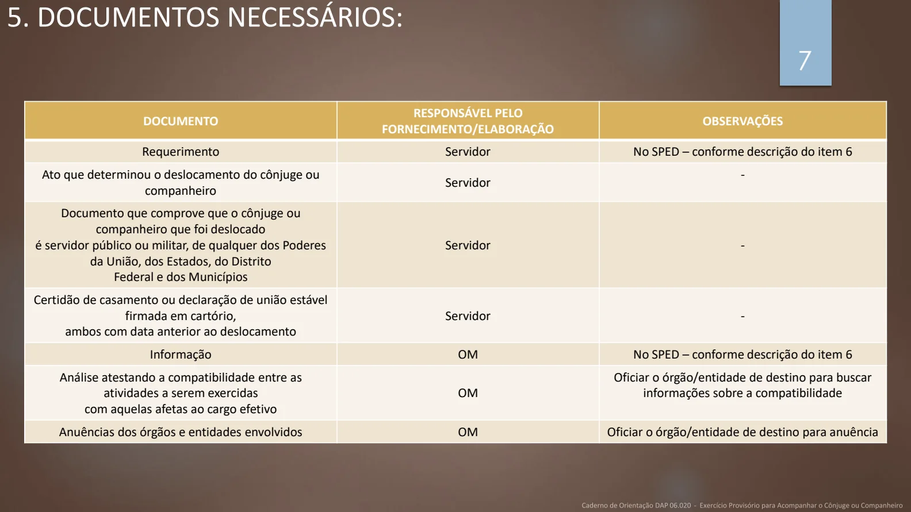
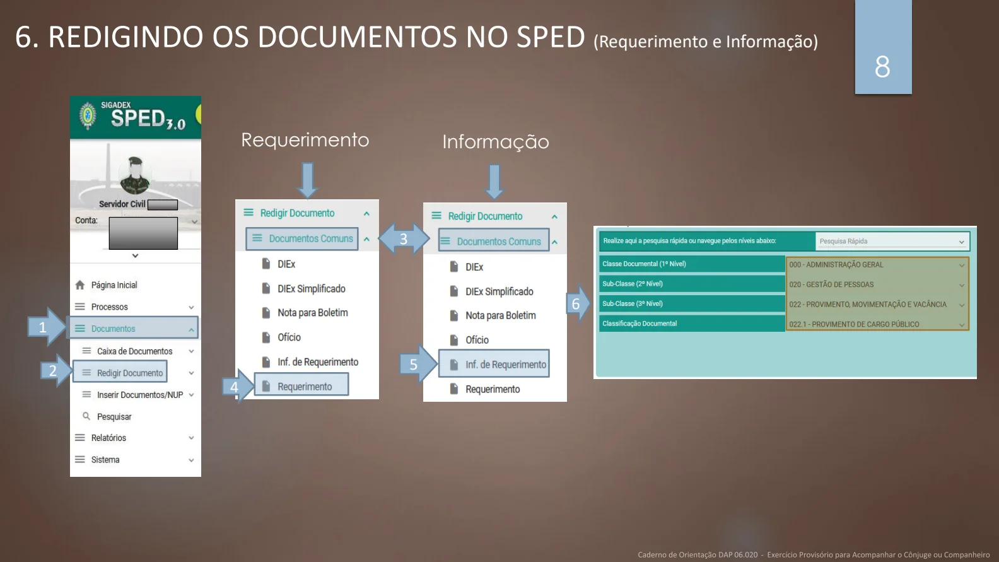
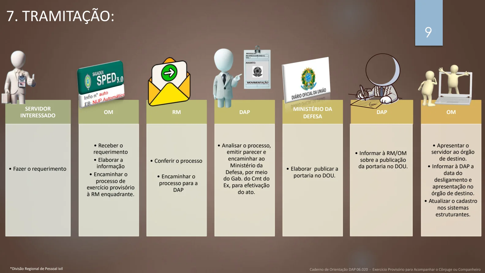
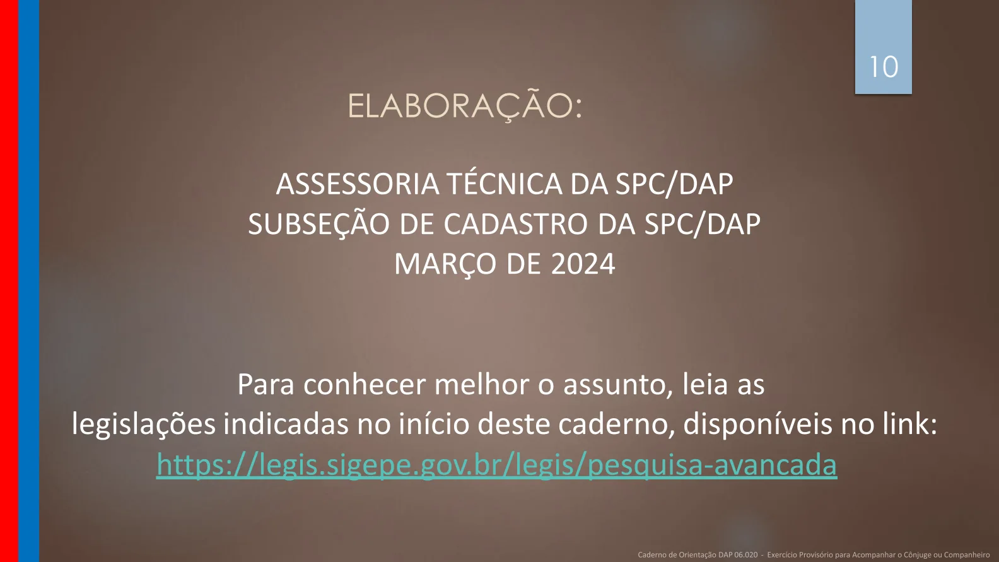

Texto extraído da edição fornecida, sem atualização normativa. Consulte a página original para conferir tabelas, formulários e instruções ilustradas. A numeração dos links corresponde à página do arquivo PDF.
Apresentação
PDF · p. 1EXERCÍCIO PROVISÓRIO PARA ACOMPANHAR
O CÔNJUGE OU COMPANHEIRO
DAP 06.020
Legislação
PDF · p. 2Lei nº 8.112, de 11 de dezembro de
1990 e suas alterações.
Portaria nº 1.166, de 11 de julho de
2012
Orientação Normativa nº 5, de 11
de julho de 2012
Nota Técnica n°
135/2013/CGNOR/DENOP/SEGEP/MP
1. LEGISLAÇÃO BÁSICA 2
É dever do servidor/empregado público/empregado público, da
Organização Militar (OM) e da Região Militar (RM) ler e acompanhar
a atualização da legislação que se refere aos assuntos tratados
neste Caderno de Orientação.
São referências de legislação:
Ver página original — tabelas, imagens e diagramas

Conceitos
PDF · p. 32. CONCEITO:
O exercício provisório é uma possibilidade de o servidor
exercer suas atividades em outro órgão ou entidade da
Administração Federal direta, autárquica ou fundacional,
quando seu cônjuge ou companheiro, também servidor
público ou militar, tenha sido deslocado para outro ponto
do território nacional, ou para o exercício de mandato
eletivo dos Poderes Executivo e Legislativo.
.
Ver página original — tabelas, imagens e diagramas

Conceitos
PDF · p. 43. REQUISITOS:
Deslocamento do cônjuge do
servidor para outro ponto do
território nacional, no
interesse da administração, ou
para o exercício de mandato
eletivo dos Poderes Executivo
e Legislativo.
Transitoriedade da situação que deu
causa ao deslocamento do cônjuge.
Requerimento do servidor interessado,
com indicação de que haverá
exercício de atividade
compatível com o seu cargo.
Análise do processo, decisão e publicação
do ato de efetivação do exercício
provisório
no Diário Oficial da União.
Ver página original — tabelas, imagens e diagramas

Conceitos
PDF · p. 55a) O exercício provisório deverá ser efetivado somente em órgãos ou
entidades da Administração Federal direta, autárquica e fundacional.
b) Caberá ao órgão ou entidade de destino apresentar o servidor ao órgão ou
entidade de origem ao término do exercício provisório.
c) exercício provisório cessará, caso sobrevenha a desconstituição da entidade
familiar ou na hipótese de o servidor deslocado retornar ao órgão de origem.
4. INFORMAÇÕES GERAIS:
Conceitos
PDF · p. 64. INFORMAÇÕES GERAIS (cont.):
e) É VEDADA a efetivação de exercício provisório pleiteado em razão de afastamento de
cônjuge ou companheiro para cursar Pós-Graduação, uma vez que somente os deslocamentos
decorrentes de atos de ofício caracterizam o interesse da Administração.
d) Somente é cabível a efetivação do exercício provisório se o deslocamento do
cônjuge tiver ocorrido em razão de ato de ofício da Administração.
Ver página original — tabelas, imagens e diagramas

Documentos necessários
PDF · p. 75. DOCUMENTOS NECESSÁRIOS:
DOCUMENTO RESPONSÁVEL PELO
FORNECIMENTO/ELABORAÇÃO OBSERVAÇÕES
Requerimento Servidor No SPED – conforme descrição do item 6
Ato que determinou o deslocamento do cônjuge ou
companheiro Servidor -
Documento que comprove que o cônjuge ou
companheiro que foi deslocado
é servidor público ou militar, de qualquer dos Poderes
da União, dos Estados, do Distrito
Federal e dos Municípios
Servidor -
Certidão de casamento ou declaração de união estável
firmada em cartório,
ambos com data anterior ao deslocamento
Servidor -
Informação OM No SPED – conforme descrição do item 6
Análise atestando a compatibilidade entre as
atividades a serem exercidas
com aquelas afetas ao cargo efetivo
OM
Oficiar o órgão/entidade de destino para buscar
informações sobre a compatibilidade
Anuências dos órgãos e entidades envolvidos OM Oficiar o órgão/entidade de destino para anuência
Ver página original — tabelas, imagens e diagramas

Documentos no SPED
PDF · p. 86. REDIGINDO OS DOCUMENTOS NO SPED (Requerimento e Informação)
1
2
4
5
Requerimento Informação
3
6
Ver página original — tabelas, imagens e diagramas

Tramitação
PDF · p. 9SERVIDOR
INTERESSADO
• Fazer o requerimento
OM
• Receber o
requerimento
• Elaborar a
informação
• Encaminhar o
processo de
exercício provisório
à RM enquadrante.
RM
• Conferir o processo
• Encaminhar o
processo para a
DAP
DAP
• Analisar o processo,
emitir parecer e
encaminhar ao
Ministério da
Defesa, por meio
do Gab. do Cmt do
Ex, para efetivação
do ato.
MINISTÉRIO DA
DEFESA
• Elaborar publicar a
portaria no DOU.
DAP
• Informar à RM/OM
sobre a publicação
da portaria no DOU.
OM
• Apresentar o
servidor ao órgão
de destino.
• Informar à DAP a
data do
desligamento e
apresentação no
órgão de destino.
• Atualizar o cadastro
nos sistemas
estruturantes.
9
7. TRAMITAÇÃO:
*Divisão Regional de Pessoal ivil
Ver página original — tabelas, imagens e diagramas

Fontes e elaboração
PDF · p. 10ELABORAÇÃO:
ASSESSORIA TÉCNICA DA SPC/DAP
SUBSEÇÃO DE CADASTRO DA SPC/DAP
MARÇO DE 2024
Para conhecer melhor o assunto, leia as
legislações indicadas no início deste caderno, disponíveis no link:
https://legis.sigepe.gov.br/legis/pesquisa-avancada
Ver página original — tabelas, imagens e diagramas
